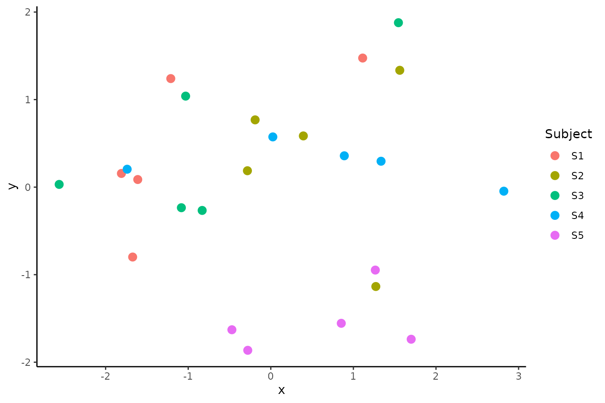
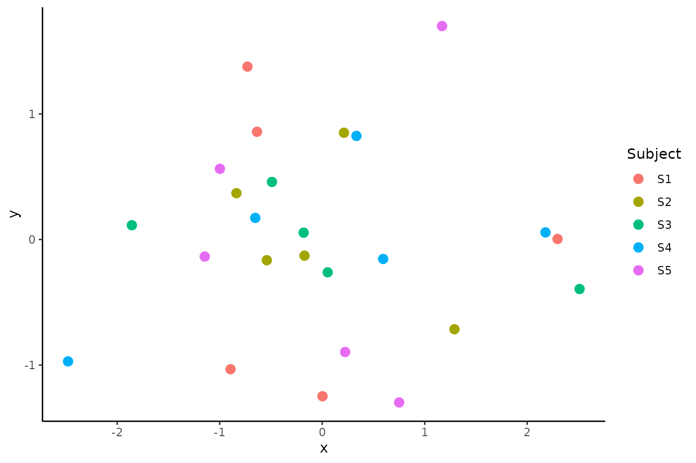

Centering covariance matrices
Corson N. Areshenkoff
2024-10-01
center_guide.Rmdspdm includes a sample neuroimaging dataset containing standardized BOLD timecourses from 5 subjects in each of 5 different conditions. This dataframe contains fields for Subject and Condition, as well as a Data field containing a list of matrices (n_timepoints x n_regions).
In a simple workflow, we might begin by computing the covariance between each of these timecourses:
data(bold)
names(bold)
#> [1] "Subject" "Condition" "Data"
# Note that it is almost always better to use some kind of regularized
# covariance estimate, but we will use the sample covariance here for
# illustration. For higher dimensional problems, it is likely that the
# sample covariance will not be positive definite.
covmats <- lapply(bold$Data, spd.estimate, method = "sample")As a visualization aid, it is sometimes useful to create some kind of
low-dimensional representation of the data. Multidimensional scaling
will do in this case, and we’ll construct the distance matrix using the
pairwise geodesic distances between covariance matrix. At the moment,
spd.dist only computes distance between a single pair
(i.e. not in bulk), and so we’ll borrow from the proxy
packages in order to compute these efficiently:
D_uncentered <- proxy::dist(covmats, method = function(i,j)
spd.dist(i, j, method = "riemannian"))
mds_uncentered <- cmdscale(D_uncentered)If we plot the embedded covariance matrices colored by subject we see a phenomenon which has been widely replicated in the neuroimaging literature: the clustering of covariance matrices within subjects:
plot_data <- data.frame(Subject = bold$Subject,
x = mds_uncentered[,1],
y = mds_uncentered[,2])
ggplot(plot_data, aes(x = x, y = y, color = Subject)) +
geom_point(size = 3) + theme_classic()
That is, functional connectivity measured in the same subject under different task conditions is more similar than the same task condition measured in different subjects (see Gratton et al. 2018). In fact, this finding can be replicated under fairly extreme conditions; for example, in Areshenkoff et al. (2021) we find similar clustering in Macaques under different doses of anesthesia. This is true even when comparing nearly awake scans to those in which the animal is totally sedated.
The actual cause of this clustering is debated, but there are likely two general reasons: 1) Functional connectivity is strongly constrained by structural connectivity, which is variable across subjects; and 2) Group average parcellations do not capture functional heterogeneity in the cortex, so (for very fine parcellations) the same parcel of cortex has slightly different functions across subjects.
Either way, the result is that actual task differences in functional
connectivity are buried in much larger static inter-subject differences.
A sensible strategy in this case would be to remove average subject
differences by “translating” the covariance matrices so that all subject
means align with a common reference point (generally, the grand mean).
This is quite simple with the spd.center() function, which
accepts a dataframe of observation information, a list of covariance
matrices, and various constraints defining the centering.
covmats_centered <- spd.center(d = bold, covmats = covmats, group_by = "Subject")In this case, we only need to align the subjects, and so specifying
group_by = "Subject" is enough.
centered_data <- spd.center(d = bold, covmats = covmats, group_by = 'Subject')
covmats_centered <- centered_data$centered_covmats
D_centered <- proxy::dist(covmats_centered, method = function(i,j)
spd.dist(i, j, method = 'riemannian'))
mds_centered <- cmdscale(D_centered)And now the subject clustering is abolished.
plot_data <- data.frame(Subject = bold$Subject,
x = mds_centered[,1],
y = mds_centered[,2])
ggplot(plot_data, aes(x = x, y = y, color = Subject)) +
geom_point(size = 3) + theme_classic()
As a side note, many analyses are better conducted on the tangent
vectors around the grand mean (that is, the centered covariance matrices
projected onto the tangent space around the mean), and so
spd.center() returns both the centered covariance matrices,
and the target mean. The tangent vectors can then be easily computed by
log-mapping the centered observations:
tanvecs <- lapply(centered_data$centered_covmats, spd.logmap,
p = centered_data$target_covariance)In some cases, the user is specifically interested in differences
relative to some reference condition (e.g. a resting state scan), and so
it may be preferable to center so that the reference scans for each
subject are aligned to the
overall mean reference scan. For example, we might wish to align
condition “A” in this dataset. In that case, constraints can be
specified using the arguments from_constraints and
to_constraints. In this case, we want to center to the mean
of all observations in condition A, and so we set
from_constraints <- "Condition == 'A'"
to_constraints <- "Condition == 'A'"In the case of to_constraints, this condition is applied
within subjects, so that we take only those observations in condition A
when computing the subject means.
centered_data <- spd.center(d = bold, covmats = covmats, group_by = "Subject",
from_constraints = from_constraints,
to_constraints = to_constraints)
covmats_centered <- centered_data$centered_covmats
D_centered <- proxy::dist(covmats_centered, method = function(i,j)
spd.dist(i, j, method = 'riemannian'))
mds_centered <- cmdscale(D_centered)
plot_data <- data.frame(Subject = bold$Subject,
Condition = bold$Condition,
x = mds_centered[,1],
y = mds_centered[,2])
ggplot(plot_data, aes(x = x, y = y, color = Subject, shape = Condition)) +
geom_point(size = 3, alpha = .5) + theme_classic()where we now have a cluster of identical observations at (0,0) for condition A, as these observations have been aligned across subjects. Note that this kind of centering has not succeeded in eliminating subject level clustering, since in addition to subject level differences, subject-by-task interactions also tend to be much larger than pure task effects.
References
Areshenkoff, C. N., Nashed, J. Y., Hutchison, R. M., Hutchison, M., Levy, R., Cook, D. J., … & Gallivan, J. P. (2021). Muting, not fragmentation, of functional brain networks under general anesthesia. Neuroimage, 231, 117830.
Gratton, C., Laumann, T. O., Nielsen, A. N., Greene, D. J., Gordon, E. M., Gilmore, A. W., … & Petersen, S. E. (2018). Functional brain networks are dominated by stable group and individual factors, not cognitive or daily variation. Neuron, 98(2), 439-452.